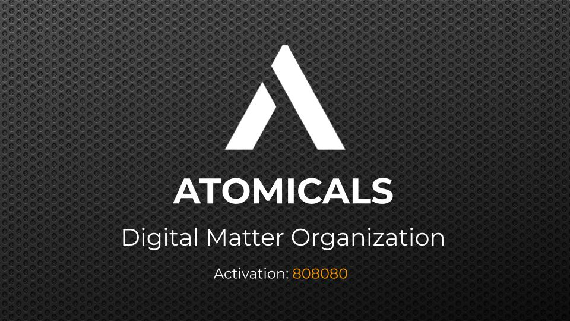

Resolve asset or deployment state
Look up the ticker through a compatible indexer, record the Atomical ID, deployment configuration, network, indexer version, and current status. Do not begin from a symbol or marketplace card alone.
Implementation playbook
ARC-20 is safe to integrate only when product intent, exact transaction allocation, and the active Atomicals validator agree. This page separates protocol workflows from the functionality currently exposed by Universe.

This is a safety checklist visual. It does not make the current Universe transfer UI safe to use.
Universe scope, audited 2026-07-18
The table describes the current code path in this repository. It deliberately does not make a promise about future releases, wallet extensions, or third-party Atomicals services.
| Capability | ARC-20 protocol | Current Universe behavior | Use guidance |
|---|---|---|---|
| Token discovery and portfolio | Indexer-readable token and UTXO state | Index-backed Uses the configured Atomicals ElectrumX proxy. Results can be unavailable, approximate, or stale relative to a chain-level verification. | Use as a live index view, then independently verify important assets and transactions. |
| Fixed DFT deployment | dft initializes a decentralized mint campaign | Adapter flow The server accepts deploy and constructs a P2TR commit and reveal order for a decentralized mint configuration. | Do not call this direct FT issuance. Preserve the resulting deployment ID and verify indexer recognition. |
| DFT mint claim | dmt claims a valid deployment mint | Adapter or native wallet The product can request a mint flow; a compatible browser wallet may handle its own native Atomicals mint path. | Check ticker state, mint rules, exact DMT output, confirmation, and indexer result before reporting a balance. |
| Direct full-supply FT mint | ft / mint-ft | Not exposed The current Universe flow does not implement the protocol's direct mint-ft creation path. | Use a dedicated Atomicals implementation. Do not represent the Universe deploy action as an equivalent substitute. |
| Transfer in the visible UI | Valid colored-UTXO allocation under Atomicals rules | Do not use The current UI does not provide the Atomicals outpoints the backend requires to construct a transfer. | Use an Atomicals-aware wallet or tool until the product supplies and validates the selected colored outpoints. |
| Partial transfer, split, or combine | Possible through valid transaction and advanced allocation behavior | Not exposed The current Universe flow must not be treated as partial-transfer, split, or combine support. | Use a validator-aware tool and inspect the full blueprint before signing. |
Current backend transfer construction requires an explicit list of colored outpoints and moves the full supplied colored-UTXO value to the recipient allocation. It does not use the visible amount field to construct a partial recipient output or protected colored change. The current frontend does not send the required outpoint list. Do not use the transfer control for ARC-20 sends until this changes.
Protocol workflow
These steps apply to a production-quality ARC-20 integration. The exact builder should be delegated to a compatible and version-aware Atomicals implementation.
Look up the ticker through a compatible indexer, record the Atomical ID, deployment configuration, network, indexer version, and current status. Do not begin from a symbol or marketplace card alone.
For direct FT versus DFT, choose explicitly. For a DFT claim, confirm start height, quota, exact mint amount, and any Bitwork requirement. For a transfer, list every colored outpoint and desired output allocation.
Mint and update workflows use the Atomicals commit and reveal model. Record the intended operation, CBOR payload, commit output, reveal transaction, and wallet network before signing.
Use an active Atomicals indexer or validator to decode the PSBT or final transaction. Review input order, output order, sat values, colored values, expected burns, and recipient scripts.
A broadcast acknowledgement is not an indexed token balance. Wait for the intended confirmation threshold and indexer recognition, then re-query by Atomical ID and output.
Store transaction IDs, selected colored outpoints, decoded allocation, source version, wallet intent, indexer response, and visible status. These details make an asset incident diagnosable.
Universe adapter notes
The repository's ARC-20 service is a convenience adapter around an ElectrumX proxy and wallet-signing flows. Its status labels and endpoint data do not replace direct protocol validation.
Read paths
Current routes provide status, configuration, token discovery, token detail, address portfolio, and search through /arc20. The configured source is Atomicals ElectrumX. Treat empty, degraded, or approximate responses as product availability signals, not proof that an asset does not exist.
GET /arc20/status, /config, /tokens, /tokens/:ticker, /portfolio/:address, and /search.
Write paths
POST /arc20/orders creates an order and POST /arc20/orders/:orderId/broadcast submits a signed result. API response fields must be treated as repository-local behavior, not a stable external protocol standard.
For deploy and mint orders, the service's confirmed state means the reveal was broadcast and recorded by the service. It does not itself prove a Bitcoin confirmation depth or current indexer recognition.
Order start
A signable product order is prepared. Inspect the transaction intent, network, and wallet request before signing.
Commit payment path
The service waits for an eligible commit UTXO. An amount at or above the requested commit amount may be accepted, so do not rely on a text instruction alone as transaction validation.
Failure or expiry
These statuses need recovery through the exact order and transaction data. They do not establish a token result.
Production gate
Turn this into acceptance criteria, integration tests, telemetry, and transaction-review UI. It is safer to refuse a send than to broadcast an allocation nobody can explain.
Reference trail
The local scope statements on this page come from the current repository implementation. The protocol statements are tied to the external source ledger.